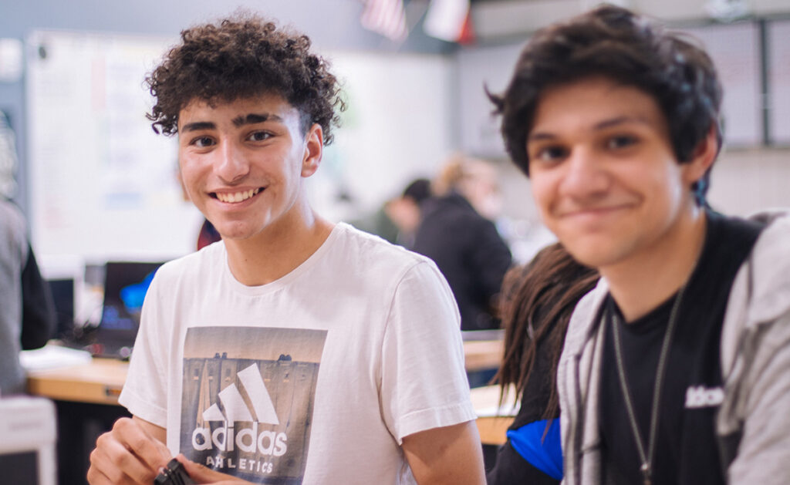

Visa Application Support at Welhan Abroad Study
Applying for a student visa can feel overwhelming, but at Welhan Abroad Study, we make the process smooth, stress-free, and successful. Our team of experienced counselors provides complete support, ensuring your application meets all requirements set by the Australian Department of Home Affairs and other destination countries.
We begin by carefully assessing your profile, academic background, and study goals. Based on this, our experts guide you in preparing the right documents such as a valid passport, Confirmation of Enrolment (CoE), financial evidence, health insurance (OSHC), English proficiency test results, and Genuine Temporary Entrant (GTE) statement. Every detail is checked thoroughly to avoid mistakes or unnecessary delays.
For students applying with dependants, or those seeking a subsequent entrant visa, we also provide personalized assistance. This includes organizing relationship documents, financial capacity proofs, and additional requirements to support family members joining you abroad.
Our services extend beyond just documentation. We prepare you for visa interviews, advise on scholarship opportunities, and ensure that your application demonstrates your genuine intention to study. From start to finish, we act as your reliable partner, providing updates and guidance at every step of the process.
At Welhan Abroad Study, we understand that a student visa is not just a formality—it’s the gateway to your international education and future career. That’s why our mission is to handle your application with the highest level of care and professionalism. With our expertise, you can be confident that your visa application is in safe hands.
See our other checklist for different visas
- Student Visa and Extension Documents Checklist (PDF)
- Student Visa Subsequent Entrant Documents Checklist (PDF)
- Tourist Visa Documents Checklist (PDF)
- Welhan 485 Visa Checklist (PDF)
- Welhan 482 Sponsorship Employer Guide (PDF)
- Training Visa 407 – Welhan Processing Cost (PDF)

About the post study work visa, Australia
The Post Study Work Visa (Subclass 485) allows you to stay in Australia for a period ranging from two to four years after completing your studies. During this time, you are expected to find a job on your own merit, and this visa can also be used for travel or further studies beyond graduation. However, it’s essential to note that Subclass 485 is a temporary visa, and the length of your stay depends on your Australian study qualification.
Here are some key details about the Subclass 485 visa:
- The cost of the 485 Temporary Graduate visa is $1,680 for the main applicant, with a different charge for family members applying with the main applicant.
- When applying for this visa, you may incur additional charges for health checks, police certifications, and biometrics. This visa is exempt from the subsequent Temporary Application Charge.
To meet the requirements for the Subclass 485 visa, you need to fulfill the following conditions:
- Age: You should be under 35 years of age.
- Current Student Visa: You must be holding a current student visa (excluding visas supported by the Defence or Foreign Affairs and Trade Minister).
- Visa Application Date: You should have applied for and been granted your first student visa on or after 5 November 2011. You will not be eligible to apply for this visa if your first student visa was granted before this date.
- Qualification: The qualification you achieve should be an eligible degree (bachelor, masters, doctoral) to be able to apply for this graduate temporary work visa. A standalone diploma or trade qualification does not make you eligible for this visa.
- Recent Student Visa: You should have held a student visa in the last 6 months before your application and now have a Bridging Visa A or B, or a substantive visa.
- CRICOS-Registered Course: You may have recently acquired a degree in a CRICOS-registered course.
- Health Insurance: You must provide evidence of adequate health insurance for all applicants when you apply.
- AFP Check: You must provide evidence that you have applied for an Australian Federal Police (AFP) check.
- English Proficiency: You must provide evidence of the required level of English fluency.
- No Debt: You should not have any debt with the Australian government.
- No Visa Cancellation: You should not have a canceled visa or a previously refused visa application.
It’s important to note that the Subclass 485 visa is not meant for extending your stay in Australia. However, you may be eligible to apply for a second Post Study Work Stream visa. To qualify for this, you must live, work, and/or study in a regional area during the validity of your first Post Study Work visa in Australia.
Temporary graduate visa holders from Hong Kong can apply for permanent residency after 5 years.
Graduates who have been impacted by COVID-19 restrictions may apply for and be granted this visa outside Australia.
If you wish to learn more or need guidance on acquiring a Post Study Work Visa (Subclass 485) in Australia, please contact our friendly team for assistance. Please go through our checklist for 485 Visa.
About the student visa subclass 500
The Student Visa Subclass 500 is a temporary visa that allows you to stay in Australia for up to 5 years. The duration of the visa may be extended beyond five years, depending on the type and duration of the selected course. Typically, primary school children are granted a visa duration of up to 3 years.
What the Subclass 500 Visa Offers:
- Eligible Course of Study: With the Subclass 500 visa, you can enroll in an eligible course of study in Australia.
- Travel in and out of Australia: The visa allows you to travel in and out of Australia during your stay.
- Work: You are permitted to work for up to 40 hours over a two-week period. In certain sectors, additional hours of work may be allowed.
Eligibility for the Student Visa Subclass 500:
To be eligible for the Student Visa Subclass 500, you need to meet specific criteria that may vary based on your age, the chosen study program, health insurance, and other factors. Here are the key eligibility requirements:
- Financial Evidence: Depending on your country of residence, you may need to provide evidence of your financial capacity to support your stay in Australia.
- Age: School students not participating in a secondary school student exchange program must be aged 6 or older. Different age conditions apply to applicants depending on the school year they are starting.
- Enrollment: You must provide evidence of enrollment in a full-time course registered on the Commonwealth Register of Institutions and Courses for Overseas Students (CRICOS). This may require providing a Confirmation of Enrolment (CoE) for each course when applying from outside Australia or a CoE or Letter of Offer when applying from within Australia.
- Welfare Arrangements: Applicants under 18 years of age must have adequate welfare arrangements in place while in Australia.
- English Language Proficiency: You need to provide evidence of your English language proficiency, which may require taking a language fluency test. Welhan can assist applicants in preparing for tests like PTE.
- Health Insurance: You and your family members must have an adequate health insurance plan for the entire duration of your stay in Australia. This requires Overseas Student Health Cover (OSHC) from an approved Australian health insurance provider.
- Health Requirements: You must meet all health requirements specified for living in Australia, and additional time may be given for health check-ups if healthcare services were disrupted due to COVID-19.
- Visa Status: If you are already in Australia, you must hold an eligible substantive visa to apply for a student visa. If not, you may apply within 28 days of holding a student visa Special Purpose visa, a dependent Diplomatic (temporary) visa, or within 28 days of being notified by the Tribunal that your visa cancellation has been set aside.
The cost of applying for this visa is $630 for the main applicant, with varying costs for accompanying family members.
Checklist of Documents for Student Visa
Welhan Abroad provides complete student and subsequent visa checklists, ensuring accurate documentation and smooth application processing. Download the student visa checklist.